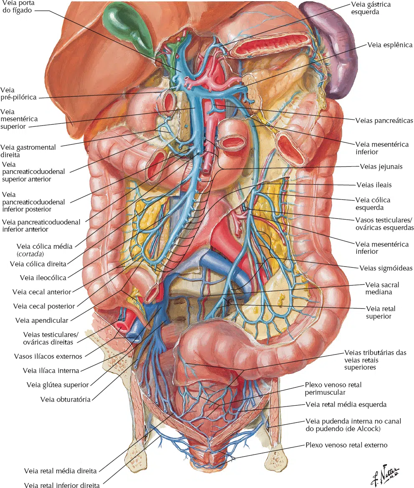
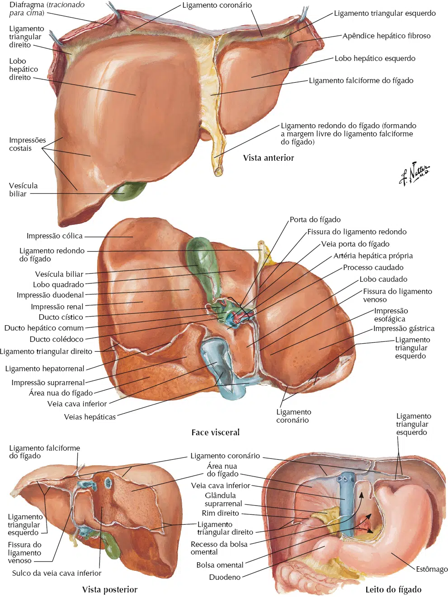
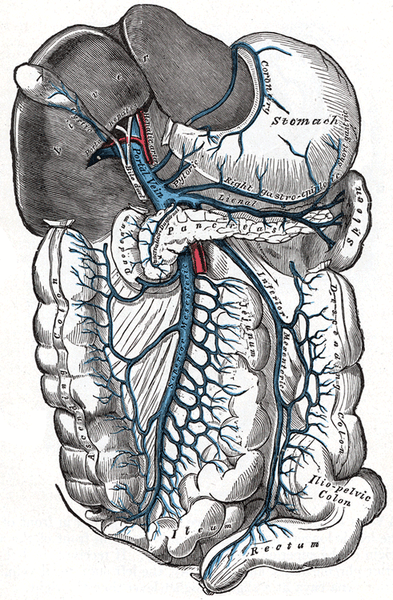
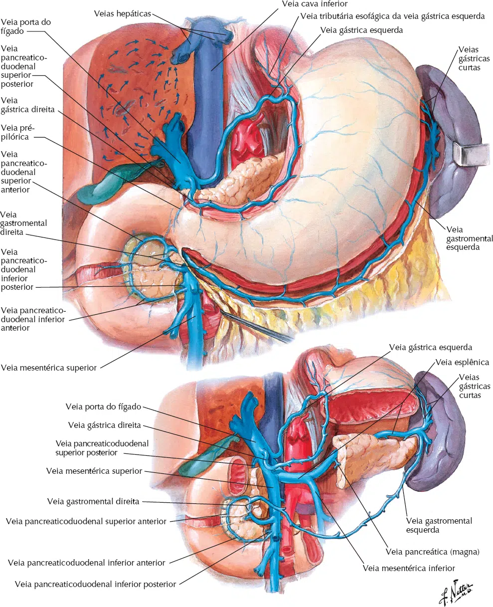

A drenagem venosa do abdome é mediada principalmente pelo sistema venoso portal e pela veia cava inferior (VCI).
Esses dois sistemas são separados um do outro na drenagem de órgãos, mas se unem proximalmente ao hiato diafragmático da VCI para devolver o sangue do abdome e da pelve ao átrio direito.
A drenagem venosa da pelve é amplamente mediada pelas veias ilíacas comuns, que se unem para formar a VCI.
É importante lembrar que a vasculatura venosa abdominal e pélvica é altamente variável.
O sistema venoso portal é composto pelas veias que drenam as vísceras abdominais, baço, pâncreas e vesícula biliar.
Quase 80% da entrada hepática provém da veia porta.
O sangue visceral entra no fígado através da veia porta hepática, que ramifica para veias de menor calibre, chegando finalmente ao nível sinusoidal hepático.
A partir daí, o sangue pós-sinusoidal é drenado para as veias hepáticas, que direcionam todo o fluxo venoso do fígado para o VCI e a circulação sistêmica.
A veia porta hepática (VPH) tem aproximadamente 7 a 8 cm de comprimento em adultos e é formada pela união da veia esplênica e da veia mesentérica superior ao nível da segunda vértebra lombar.
Fica posterior à cabeça pancreática e anterior à VCI.
A VPH entra no fígado, passando posterior e medialmente ao ducto biliar e posterior e lateral à artéria hepática.
Se divide nas veias porta direita e esquerda.
No adulto, a veia porta hepática e seus afluentes são desprovidas de válvulas.
No entanto, no feto e por um breve período pós-parto, as válvulas podem ser encontradas nas tributários portais.

Convencionalmente, a VP direita recebe primeiro o sangue retornando da veia cística e entra no lobo hepático direito, onde se divide em troncos anterior e posterior, fornecendo aos segmentos hepáticos 5 a 8.
A VP esquerda, que é mais longa, mas geralmente menor em calibre, é discutido em termos de uma porção transversal mais proximal e uma porção umbilical mais distal, fornece aos segmentos hepáticos 1 a 4.
Ao longo de seu curso, a VP esquerda funde-se com as veias paraumbilicais e ligamento redondo (veia umbilical esquerda obliterada) e é unido à VCI pelo ligamento venoso (ducto venoso obliterado).
O influxo para a VPH é fornecido pelas veias mesentérica superior, esplênica, gástrica direita, gástrica esquerda (coronária), paraumbilical e cística.

A veia mesentérica superior (VMS) drena o intestino delgado, o ceco, o apêndice e as porções ascendente e transversal do intestino grosso.
O seu curso é posterior à cabeça do pâncreas e ao segmento horizontal do duodeno e fica anterior à VCI.
A VMS se une à veia esplênica para formar a VPH.
As tributárias da VMS incluem as veias jejunal, ileal, ileocólica, cólica direita e cólica média.
As veias jejunal e ileal recebem o nome de suas respectivas artérias e estão em conformidade com a mesma distribuição de arcada.
Elas drenam o jejuno e o íleo para a VMS, geralmente no lado esquerdo.
A veia ileocólica é formada pela união das veias cecal anterior e posterior, veias apendiculares, última veia ileal e veia cólica.
A veia ileocólica pode se anastomozar com as veias ileais e cólica direita e, eventualmente, drena para o VMS à direita.
A veia cólica direita drena o cólon direito e pode anastomosar-se com as veias cólicas ileocólicas e cólicas médias na VMS .
A veia cólica média drena o cólon transverso através de seus ramos esquerdo e direito.
A veia gastroepiplóica direita percorre a maior curvatura do estômago e drena o omento maior, corpo distal e antro do estômago para a VMS.
Pode formar conexões com a veia gastroepiplóica esquerda e pode servir como circulação colateral no cenário de trombose da veia esplênica.
As veias pancreático-duodenais drenam a cabeça do pâncreas e a parede duodenal para a VMS.
Essas veias estão de acordo com a mesma anatomia das artérias pancreático-duodenais, com arcadas venosas anterior e posterior entre as veias pancreático-duodenal superior e inferior.

A veia gástrica direita percorre a curvatura menor do estômago, drenando o estômago para a VPH.
A veia gástrica esquerda (veia coronária) drena as paredes gástricas para a VPH.
Também se conecta à veia esofágica inferior através de múltiplas anastomoses.

As veias paraumbilicais são pequenas em calibre e em número variável e são encontradas estendendo-se ao longo do ligamento redondo e ligamento umbilical mediano.
Essas veias curtas conectam as veias da parede abdominal anterior ao sistema venoso portal.
Como tal, elas podem oferecer circulação venosa colateral no caso de obstrução portal.